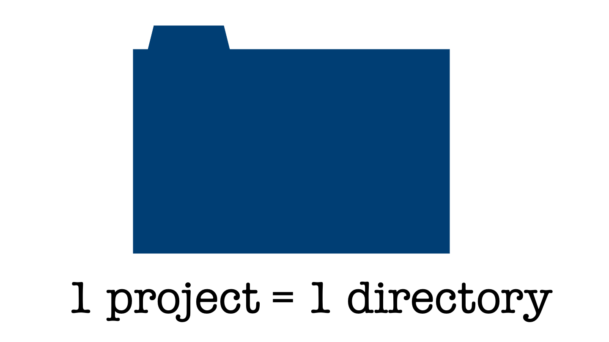
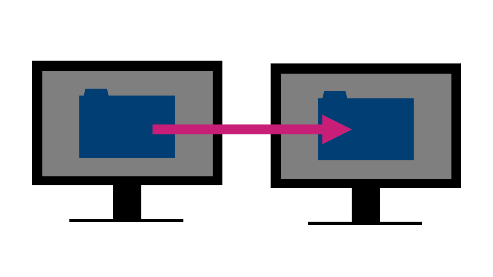
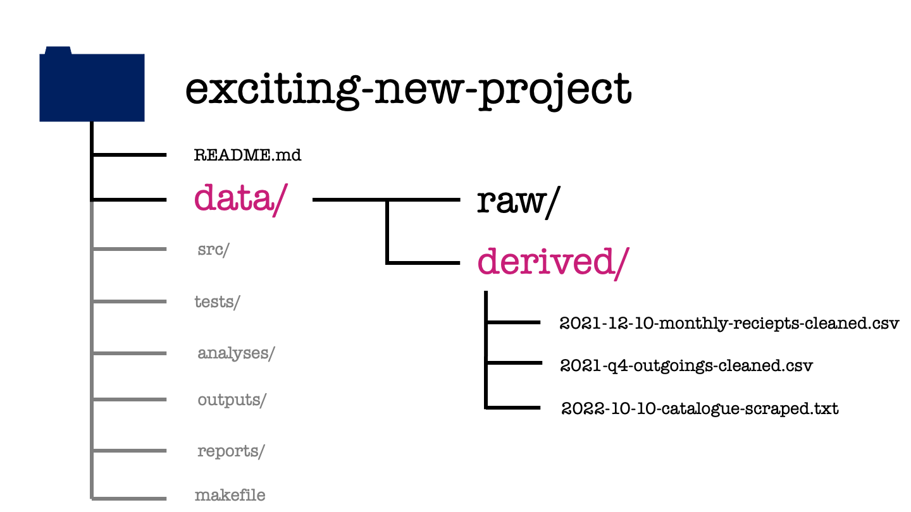

1 Organising your work
source("_common.R")
status("polishing")
Note
Effective Data Science is still a work-in-progress. This chapter should be readable but is currently undergoing final polishing.
If you would like to contribute to the development of EDS, you may do so at https://github.com/zakvarty/data_science_notes.
Welcome to this course on effective data science. This week we’ll be considering effective data science workflows. These workflows are ways of progressing a project that will help you to produce high quality work and help to make you a good collaborator.
In this Chapter, we’ll kick things off by looking at how you can structure data science projects and organize your work. Familiarity with these skills, processes and practices for collaborative working are going to be instrumental as you become a successful data scientist.
1.1 What are we trying to do?
First, let’s consider why we want to provide our data science projects with some sense of structure and organization.
As a data scientist you’ll never work alone. Within a single project you’ll interact with a whole range of other people. This might be a project manager, one or more business stakeholders or a variety of subject matter experts. These experts might be trained as sociologists, chemists, or civil servants depending on the exact type of data science work that you’re doing.
To then get your project put into use and working at scale you’ll have to collaborate with data engineers. You’ll also likely work closely with other data scientists. For smaller projects this might be to act as reviewers for one another’s work. For larger projects working collaboratively will allow you to tackle larger challenges. These are the sorts of project that wouldn’t be feasible alone, because of the inherent limitations on the time and skill of any one individual person.
Even if you work in a small organization, where you’re the only data scientist, then adopting a way of working that’s focused on collaborating will pay dividends over time. This is because when you inevitably return to the project that you’re working on in several weeks or months or years into the future you’ll have forgotten almost everything of what you did the first time around. You’ll also have forgotten why you made the decisions that you did and what other potential options there were that you didn’t take.
This is exactly like working with a current colleague who has shoddy or poor working practices. Nobody wants to be that colleague to somebody else, let alone to their future self. Even when working alone, treating your future self as a current collaborator (and one that you want to get along well with) makes you a kind colleague and a pleasure to work with.
The aim of this week is to provide you with a guiding structure on how you organize and perform your work. None of this is going to be particularly difficult or onerous. However it will require a bit more effort up front and daily discipline. Like with flossing, the daily effort required is not large but the benefits will compound over time.
You’ll get more done by wasting less time staring quizzically at a mess of folders and indecipherable code. You’ll also get a reputation as someone who’s well organized and good to work with. This promotes better professional relationships and greater levels of trust within your team. These can then, in turn, tead to you working on more exciting and more impactful projects in the future.
1.2 An R Focused Approach
The structures and workflows that are recommend here and throughout the rest of this module are focused strongly on a workflow that predominantly uses R, markdown and LaTeX.
Similar techniques, code and software can achieve the same results that I show you here when coding in Python or C, or when writing up projects in Quarto or some other markup language. Similarly, different organizations have their own variations on these best practices that we’ll go through together. Often organisations will have extensive guidance on these topics.
The important thing is that once you understand what good habits are and have build them in one programming language or business, then transferring these skills to a new setting is largely a matter of learning some new vocabulary or slightly different syntax.
With that said, let’s get going!
1.3 One Project = One Directory
If there’s one thing you should take away from this chapter, it’s this one Golden Rule:
Every individual project you work on as a data scientist should be in a single, self-contained directory or folder.
This is worth repeating. Every single project that you work on should be self-contained and live in a single directory. An analogy here might be having a separate ring-binder folder for each of your modules on a degree program.
This one golden rule is deceptively simple.
The first issue here is that it requires a predetermined scope of what is and what isn’t going to be covered by this particular project. This seems straightforward but at the outset of the project you often do not know exactly where your project will go, or how it will link to other pieces of work within your organization.
The second issue is the second law of Thermodynamics, which applies equally well to project management as it does to the heatdeath of the universe. It takes continual external effort to prevent the contents of this one folder from becoming chaotic and disordered over time.
That being said, having a single directory has several benefits which more than justify this additional work.
1.4 Properties of a Well-Orgainsed Project
What are the properties that we would like this single, well-organized project to have? Ideally, we’d like to organize our projects so that I have the following properties:
- Portable
- Version Control Friendly
- Reproducible
- IDE friendly.
Don’t worry if you haven’t heard of some of these terms already. We’re going to look at each of them in a little bit of detail.
1.4.1 Portability
A project is said to be portable if it can be easily moved without breaking.

This might be a small move, like relocating the directory to a different location on your own computer. It might also mean a moderate move, say to another machine if yours dies just before a big deadline. Alternatively, it might be a large shift - to be uses by another person who is using a different operating system.
From this thought experiment you can see that there’s a full spectrum of how portable a project may or may not need to be.
1.4.2 Version Control Friendly
A project under Version Control has all changes tracked either manually or automatically. This means that snapshots of the project are taken regularly as it gradually develops and evolves over time. Having these snapshots as many, incremental changes are made to the project allow it to be rolled back to a specific previous state if something goes wrong.
A version controlled pattern of working helps to avoid the horrendous state that we have all found ourselves in - renaming final_version.doc to final_final_version.doc and so on.
By organising your workflow around incremental changes helps you to acknowledge that no work is ever finally complete. There will always be small changes that need to be done in the future.
1.4.3 Reproducibility
A study is reproducible if you can take the original data and the computer code used to analyze the data and recreate all of the numerical findings from the study.
Broman et al (2017). “Recommendations to Funding Agencies for Supporting Reproducible Research”
In their paper, Broman et al define reproducibility as a project where you can take the original data and code used to perform the analysis and using these we create all of the numerical findings of the study.
This definition leads naturally to several follow-up questions.
Who exactly is you in this definition? Does it specifically mean yourself in the future or should someone else with access to all that data and code be able to recreate your findings too? Also, should this reproducibility be limited to just the numerical results? Or should they also be able to create the associated figures, reports and press releases?
Another important question is when this project needs to be reproduced. Will it be in a few weeks time or in 10 years time? Do you need to protect your project from changes in dependencies, like new versions of packages or modules? How about different versions of R or Python? Taking this time scale out even further, what about different operating systems and hardware?
It’s unlikely you’d consider someone handing you a floppy disk of code that only runs on Windows XP to be acceptably reproducible. Sure, you could probably find a way to get it to work, but that would be an awful lot of effort on your end.
That’s perhaps a bit of an extreme example, but it emphasizes the importance of clearly defining the level of reproducibility that you’re aiming for within every project you work on. This example also highlights the amount of work that can be required to reproduce an analysis, especially after quite some time. It is important to explicitly think about how we dividing that effort between ourselves as the original developer and the person trying to reproduce the analysis in the future.
1.4.4 IDE Friendly
Our final desirable property is that we’d like our projects to play nicely with integrated development environments.
When you’re coding document and writing your data science projects it’d be possible for you to work entirely in either a plain text editor or typing code directly at the command line. While these approaches to a data science workflow have the benefit of simplicity, they also expect a great deal from you as a data scientist.
These workflows expect that you should type everything perfectly accurately every time, that you recall the names and argument orders of every function you use, and that you are constantly aware of the current state of all objects within your working environment.
Integrated Development Environments (IDEs) are applications that help to reduce this burden, helping make you a more effective programmer and data scientist. IDEs offer tools like code completion and highlighting to make your code easier to read and to write. They offer tools for debugging, to fix where things are going wrong, and they also offer environment panes so that you don’t have to hold everything in your head all at once. Many IDEs also often have templating facilities. These let you save and reuse snippets of code so that you can avoid typing out repetitive, boilerplate code and introducing errors in the process.
Even if you haven’t heard of IDEs before, you’ve likely already used one. Some common examples might be RStudio for R-users, PyCharm for python users, or Visual Studio as a more language agnostic coding environment.
Whichever of these we use, we’d like our project to play nicely with them. This lets us reap their benefits while keeping our project portable, version controlled, and reproducible for someone working with a different set-up.
1.5 Project Structure
I’ve given a pretty exhaustive argument for why having a single directory for each project is a good idea. Let’s now take a look inside that directory and define a common starting layout for the content of all of your projects.
Having this sort of project directory template will mean that you’ll always know where to find what you’re looking for and other members of your team will too. Again, before we start I’ll reiterate that we’re taking an opinionated approach here and providing a sensible starting point for organizing many projects.
Every project is going to be slightly different and some might require slight alterations to what I suggest here. Indeed, even if you start as I suggest then you might have to adapt your project structure as it develops and grows. I think it’s helpful to consider yourself as a tailor when making these changes. I’m providing you with a one size fits all design, that’s great for lots of projects but perfect for none of them. It’s your job to alter and refine this design for each individual case.
One final caveat before we get started: companies and businesses will many times have a house style how to write and organize your code or projects. If that’s the case, then follow the style guide that your business or company uses. The most important thing here is to be consistent at both an individual level and across the entire data science team. It’s this consistency that reaps the benefits.
Okay, so imagine now that you’ve been assigned a shiny new project and have created a single directory in which to house that project. Here we’ve, quite imaginatively, called that directory exciting-new-project. What do we populate this folder with?

In the rest of this video, I’ll define the house-style for organizing the root directory of your data science projects in this module.

Within the project directory there will be some subdirectories, which you can tell a folders in this file structure because they have a forward slash following their names. There will also be some files directly in the root directory. One of these is called readme.md and the another called either makefile or make.r. We’re going to explore each of these files and directories in turn.
1.5.1 README.md
Let’s begin with the readme file. This gives a brief introduction to your project and gives information on what the project aims to do. The readme file should describe how to get started using the project and how to contribute to its development.
The readme is written either in a plain text format so readme.txt or in markdown format readme.md. The benefit of using markdown is that it allows some light formatting such as sections headers and lists using plain text characters. Here you can see me doing that by using hashes to mark out first and second level headers and using bullet points for a unnumbered list. Whichever format you use, the readme file for your project is always stored in the root directory and is typically named in all uppercase letters.
The readme file should be the first thing that someone who’s new to your project reads. By placing the readme in the root directory and capitalising the file name you are increase the visibility of this file and increase the chances of this actually happening.
An additional benefit to keeping the readme in the root directory of your project is that code hosting services like GitHub, GitLab or BitBucket will display the contents of that readme file next to the contents of your project. Those services will also nicely format any markdown that you use for you in your readme file.
When writing the readme, it can be useful to imaginge that you are writing this for a new, junior team member. The readme file should let them get started with the project and make some simple contributions after reading only that file. It might also link out to more detailed project documentation that will help the new team member toward a more advanced understanding or complex contribution.
1.5.2 Inside the README
let’s take a quick aside to see in more detail what should be covered within a readme file.
A readme we should include the name of the project, which should be self-explanatory (so nothing like my generic choice of exciting-new-project). The readme should also give the project status, which is just a couple of sentences to say whether your project is still under development, the version oft the current release or, on the other end of the project life-cycle, if the project is being deprecated or closed.
Following this, we should also include a description of your project. This will state the purpose of your work and to provide, or link to, any additional context or references that visitors aren’t assumed to be familiar with.
If your project involves code or depends on other packages then you should give some instruction on how to install those dependencies and run your code. This might just be text but it could also include things like screenshots, code snippets, gifs or a video of the whole process.
It’s also a good practice to include some simple examples of how to use the code within your project an the expected results, so that new users can confirm that everything is working on their local instance. Keep the examples as simple and minimal as you can so that new users
For longer or more complicated examples that aren’t necessary in this short introductory document you can add links to those in the readme and explain them in detail elsewhere.
There should ideally be a short description of how people can report issues with the project and also how people can get started in resolving those issues or extend the project in some way.
That leads me on to one point that I’ve forgotten to list here. There there should be a section listing the authors of the work and the license in which under which it’s distributed. This is to give credit to all the people who’ve contributed to your project and the license file then says how other people may use your work. The license declares how other may use your project and whether they have to give direct attribution to your work in any modifications that they use.
1.5.3 data

Moving back to our project structure, next we have the data directory.
The data directory will have two subdirectories one called raw and one called derived. All data that is not generate as part of your project is stored in the raw subdirectory. To ensure that a project is reproducible, data in the Raw folder should never be edited or modified.
In this example we’ve got two different data types: an Excel spreadsheet the XLS file and a JSON file. These files are exacty as we received them from our project stakeholder.
The text file metadata.txt is a plain text file explaining the contents and interpretation of each of the raw data sets. This metadata should include descriptions of all the measured variables, the units that are recorded in, the date the file was created or acquired, and the source from which it was obtained.
The raw data likely isn’t going to be in a form that’s amenable to analyzing straight away. To get the data into a more pleasant form to work, it will require some data manipulation and cleaning. Any manipulation or cleaning that is applied should be well documented and the resulting cleaned files saved within the derived data directory.

In our exciting new project, we can see the clean versions of the previous data sets which are ready for modelling. There’s also a third file in this folder. This is data that we’ve acquired for ourselves through web scraping, using a script within the project.
1.5.4 src

The src or source directory contains all the source code for your project. This will typically be the functions that you’ve written to make the analysis or modelling code more accessible.
Here we’ve saved each function in its own R script and, in this project, we’ve used subdirectories to organise these by their use case. We’ve got two functions used in data cleaning: the first replaces NA values with a given value, the second replaces these by the mean of all non-missing values.
We also have three helper functions: the first two calculate rolling mean and the geometric mean of a given vector, the third is a function that scrapes the web data we saw in the derived data subdirectory.
1.5.5 tests
Moving on then to the tests directory. The structure of this directory mirrors that of the source directory. Each function file has its own counterpart file of tests.
These test files provide example sets of inputs and the expected outputs for each function. The test files are used to check edge cases of a function or to assure yourself that you haven’t broken anything while fixing some small bug or adding new capabilities to that function.
1.5.6 analyses
The analyses directory contains what you probably think of as the bulk of your data science work. It’s going to have one subdirectory for each major analysis that’s performed within your project and within each of these there might be a series of steps that we collect into separate scripts.
The activity performed at each step is made clear by the name of each script, as is the order in which we’re going to perform these steps. Here we can see the scripts used for the 2021 annual report. First is a script used to take the raw monthly receipts and produce the cleaned version of the same data set that we saw earlier. This is followed by a trend analysis of this cleaned data set.
Similarly for the spending review we have a data cleaning step, followed by some forecast modelling and finally the production of some diagnostic plots to compare these forecasts.
1.5.7 outputs
The outputs directory has again one subdirectory for each meta-analysis within the project. These are then further organized by the output type whether that be some data, a figure, or a table.
Depending on the nature of your project, you might want to use a modified subdirectory structure here. For example, if you’re doing several numerical experiments then you might want to arrange your outputs by experiment, rather than by output type.
1.5.8 reports

The reports directory is then where everything comes together. This is where the written documents that form the final deliverables of your project are created. If these final documents are written in LaTeX or markdown, both the source and the compiled documents can be found within this directory.
When including content in this report, for example figures, I’d recommend against making copies of those figure files within the reports directory. If you do that, then you’ll have to manually update the files every time you modify them. Instead you can use relative file paths to include these figures. Relative file paths specify how to get to the image, starting from your TeX document and moving up and down through the levels of your project directory.
If you’re not using markdown or LaTeX to write your reports, but instead use an online platform like overleaf as a latex editor or Google docs to write collaboratively then links to them in the reports directory using additional readme files. Make sure you set the read and write permissions for those links appropriately, too.
When using these online writing systems, you’ll have to manually upload and update your plots whenever you modify any of your earlier analysis. That’s one of the drawbacks of these online tools that has to be traded off against their ease of use.
In our exciting new project, here we can see that the annual report is written in a markdown format, which is compiled to both HTML and PDF. The spendiing review is written in LaTeX and we only have the source for it, we don’t have the compiled pdf version of the document.
1.5.9 make file
The final element of our template project structure is a make file. We aren’t going to cover how to read or write make files in this course. Instead, I’ll give you a brief description of what they are and what it is supposed to do.
At a high level, the make file is just a text file. What makes it special is what it contains. Similar to a shell or a bash script, make file contains code that could be run at the command line. This code will create or update each element of your project.
The make file defines shorthand commands for the full lines of code that create each element of your project. The make file also records the order in which these operations have to happen, and which of these steps are dependent on one another. This means that if one step part of your project is updated then any changes will be propagated through your entire project. This is done in quite a clever way so the only part of your projects that are re-run are those that need to be updated.
We’re omitting make files from this course not because they’re fiendishly difficult to write or read, but rather because they require a reasonable foundation in working at the command line to be understood. What I suggest you do instead throughout this course is to create your own R or markdown file called make. This file will define the intended running order and dependencies of your project and if it is an R file, it might also automate some parts of your analysis.
1.6 Wrapping up
Wrapping up then, that’s everything for this chapter.
I’ve introduced a project structure that will serve you well as a baseline for the vast majority of projects in data science.

In your own work, remember that the key here is standardisation. Working consistently across projects, a company or a group is more important than sticking rigidly to the particular structure that I have defined here.
There are two notable exceptions where you probably don’t want to use this project structure. That’s when you’re building an app or you’re building a package. These require specific organisation of the files within your project directory. We’ll explore the project structure used for package development during the live session this week.
1.7 Session Information
R version 4.2.2 (2022-10-31)
Platform: x86_64-apple-darwin17.0 (64-bit)
locale: en_US.UTF-8||en_US.UTF-8||en_US.UTF-8||C||en_US.UTF-8||en_US.UTF-8
attached base packages: stats, graphics, grDevices, datasets, utils, methods and base
loaded via a namespace (and not attached): Rcpp(v.1.0.11), digest(v.0.6.33), jsonlite(v.1.8.7), evaluate(v.0.21), rlang(v.1.1.1), cli(v.3.6.1), renv(v.0.16.0), rstudioapi(v.0.15.0), rmarkdown(v.2.23), tools(v.4.2.2), pander(v.0.6.5), htmlwidgets(v.1.6.2), xfun(v.0.39), yaml(v.2.3.7), fastmap(v.1.1.1), compiler(v.4.2.2), htmltools(v.0.5.5) and knitr(v.1.43)